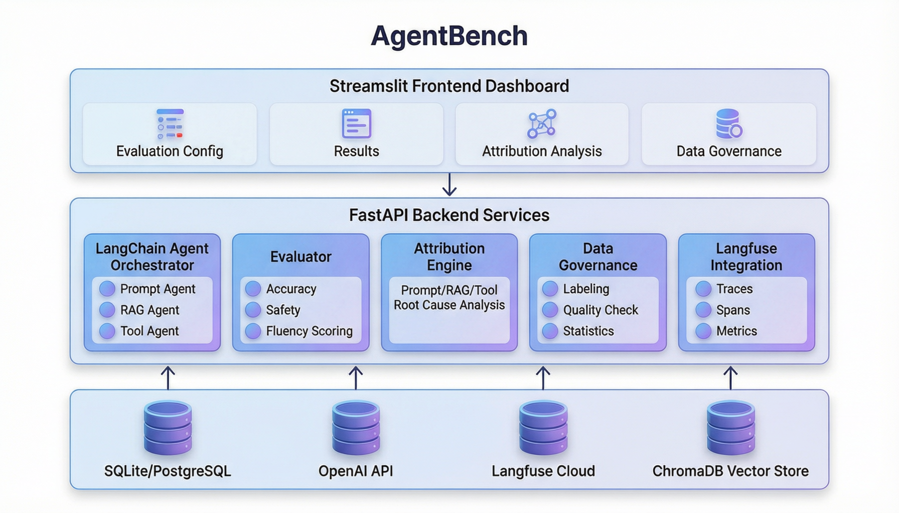
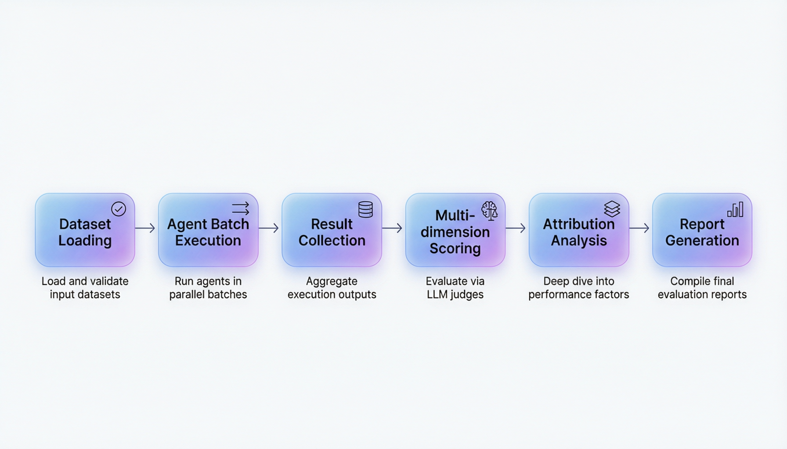
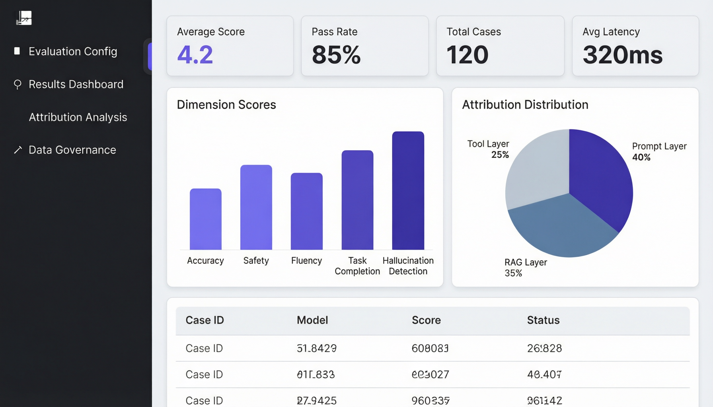

面向大语言模型 Agent 的自动化评测平台 —— 评测维度自定义、批量自动化评测、Prompt / RAG / Tool 多层归因分析、数据治理与 Langfuse 全链路可观测性
覆盖 AI Agent 评测全链路的六大模块
支持手动录入、JSON 批量导入，自定义评测维度与评分标准，版本管理确保评测数据可追溯
基于 LangChain 构建 Prompt / RAG / Tool 三类 Agent，覆盖纯推理、检索增强、工具调用三大场景
多维度自动评分：准确性、安全性、流畅性、任务完成度、幻觉检测，每个维度都有详细的评分标准
自动定位 Agent 失败根因：Prompt 层（指令设计）、RAG 层（检索召回）、Tool 层（工具调用），并生成优化建议
统一标签体系、数据质量校验（重复/缺失/异常检测）、统计口径管理，确保评测数据可靠可信
全链路 Trace 追踪，Span 级分析（检索/生成分阶段），评测指标自动上报，支持跨实验对比
清晰的分层架构设计，模块化可扩展

从数据加载到报告生成的完整自动化流程

自动定位 Agent 失败根因，生成针对性优化建议
Streamlit 构建的交互式评测看板，直观展示评测结果与归因分析

精心选型，覆盖 AI 应用开发全链路
三步启动你的第一个 Agent 评测